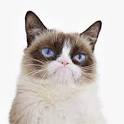
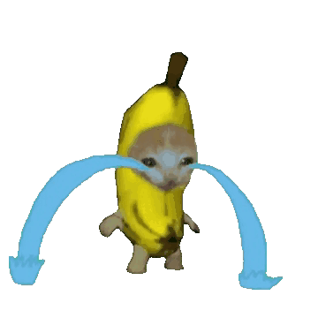
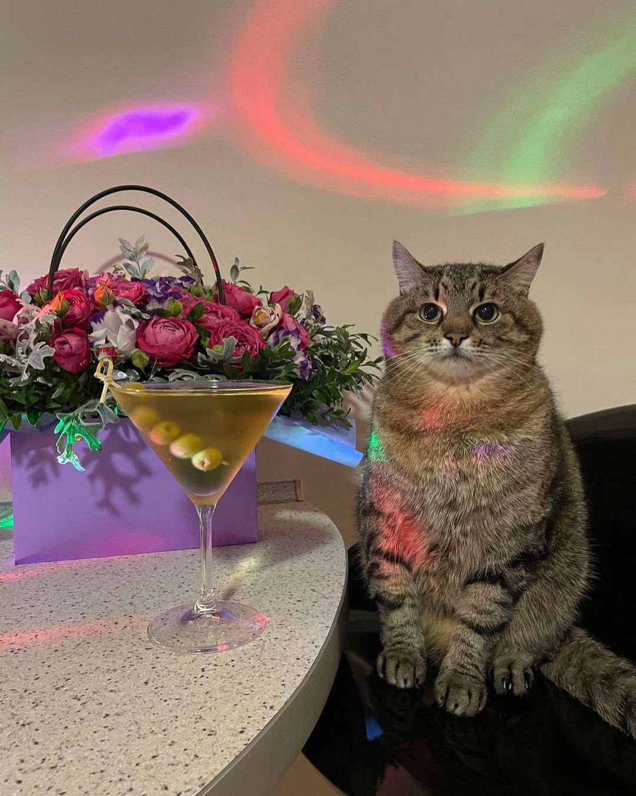
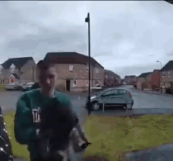
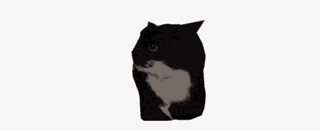

Jump to bottom
-
Grumpy Cat

Grumpy Cat is the most recognizable cat on this list, with memes of her being very mainstream. Grumpy Cat's real name was Tardar Sauce and she was born on April 4th, 2012. Tardar Sauce had feline dwarfism and an underbite, which caused her to look permanently grumpy. Tardar Sauce's rise to fame started when her owner's brother, Bryan Bundesen, posted a photo of her to the social media site Reddit on September 22nd, 2012. From there, Tartar Sauce, now known as Grumpy Cat, had become "memed" by many people online, and now even after Grumpy Cat's untimely death due to health issues, people know who she was.
Sources:
The Offical Grumpy Cat Facebook
Grumpy Cat Wikipedia Page
-
Crying Banana Cat

Crying Banana Cat, then just sad banana cat, originated online on March 3rd, 2021 after a compilation edit of cats wearing banana suits was posted to Facebook by user Sin Achilles. After this, many people online shared the post and once Tiktok user happyhappiihappy included sad banana cat crying in one of their videos on March 17th 2023, Crying Banana Cat was born and their popularity skyrocketed. Sadly, not much is known about the actual cat as information was not given on the cats in the original compilation edit.
Sources:
Tenor @lmaonoob
Know Your Meme - Sad Banana Cat
-
Happi Happi Happi Cat

Happi Happi Happi Cat first became known to the internet on November 11th, 2015 when Imgur user Datsun280zxt uploaded the video of a kitten excitedly jumping behind a glass door when its owner arrived home. While Datsun280zxt later deleted the video, two days later it was uploaded by YouTube user The Pet Tree House on November 13th. The recent rise in popularity comes primarily from TikTok user happyhappiihappy when on March 18th, 2023, they uploaded an edit of the cat eating Lao Gan Ma. It has recently been featured in many edits on Tiktok, however no information is known about the Happi Happi Happi Cat themselves.
Sources:
Know Your Meme - Happy Happy Happy Cat
Tenor @scarfired
-
Stepan

stuff about this cat
Sources:
name of source
-
Meow Doorbell Cat

stuff about this cat
Sources:
Youtube @weehoohaha
-
doesn't like salad cat

stuff about this cat - Smudge
Sources:
-
Maxwell

stuff about this cat
Sources:
-
Polite Cat

stuff about this cat
Sources:
9gag user @enpu
-
happi happi happi cat

stuff about this cat
Sources:
-
Sadboy and Lola

Sadboy and Lola are together on this list as they are in love and it wouldn't feel fight to separate them.
Sources:
Poetsquarehuman's gofundme
TikTok user @poetssquarecats